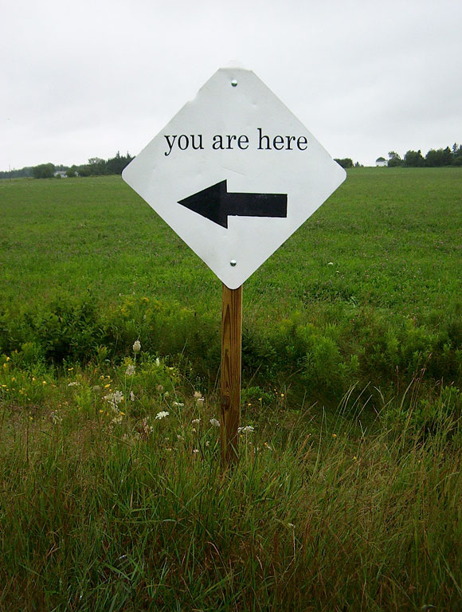

Bringing Java to the
Ruby World
Bernerd Schaefer
- oinopa.com
- @bjschaefer
- github.com/bernerdschaefer
Nobody told me.

Java and Ruby
Java and Ruby
Ruby and JRuby
Techniques
- Standalone
- REST
- DRb
To the Terminal!
(we looked at each of these sample projects during the demo -- look for forthcoming blog posts about each!)
Back to the Fluffy Stuff
My Story with Java
2004
And that's it.
So why am I here?

I love...
- Ruby
- JRuby
Ruby solves problems
JRuby solves different problems
Ruby + JRuby =
MORE SOLUTIONS
Rubyists Should Know Both
You don't have to...
- abandon your existing site
- be a Java programmer
- write Java
You do have to...
- learn what tools are available
- be open-minded
Have fun solving problems
Questions?
- CODE & SLIDES:
oinopa.com/jrubyconf
Thanks!
- CODE & SLIDES:
oinopa.com/jrubyconf